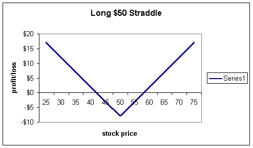
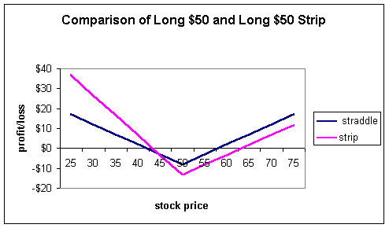
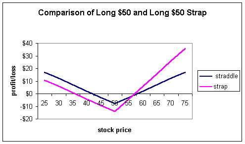

Options are very versatile and one of the most powerful tools you can learn as a trader is how to combine them to create unique profit and loss profiles that exactly meet your needs.
Although the terms are not used much anymore, strips and straps are two very basic combinations that demonstrate this ability.
A strip is a strategy where the trader buys one call and two puts with the same strike and expiration dates.
If you read the section on straddles, you will see these strategies are similar. With a strip, though, the investor is unsure about the direction, but is putting a little more emphasis on the downside move.
First, let's look at the straddle which is one long one call and one long put with the same strikes and expiration dates. Assuming this investor paid $8 for the two positions, the profit and loss will look like this:
The strip, because it has two puts instead of one will look like this:
It is evident from the profit and loss diagram that the investor will profit more from a fall in the stock as compared to a rise. This strategy exactly matches the investor's sentiment of the stock. The tradeoff is that the strip costs more than the straddle simply for the fact that you are buying an additional put for the strip. Because of this additional cost, a bigger rise in the stock will be necessary before break-even is achieved to the upside with the strip as compared to the straddle. Conversely, the strip will show a profit quicker as compared to the straddle if the stock should fall. Both strategies hit maximum loss at the strike price, as all options will expire worthless here.
A strap is basically the opposite of the strip: the investor buys two calls but only one put. In this case, the investor is betting that there is a higher chance the stock will rise but is still uncertain so wants to play the downside as well. Looking at the profit and loss diagrams for the straddle and strap:
Again we see the traders biases built into the strategy. If the stock rises, as he believes, he will profit at a much greater pace. However, if the stock falls, he will still profit but will have a much lower break-even point as compared to the straddle.
These simple strategies should suggest just how powerful options can be. Not only can you build your profit and loss lines in the direction you want, you can adjust the rates of profit and losses.
In addition, there is no reason to stop here! An investor could easily buy three puts for every one call, or three calls for every put. Hopefully you get the idea. Options are very versatile!